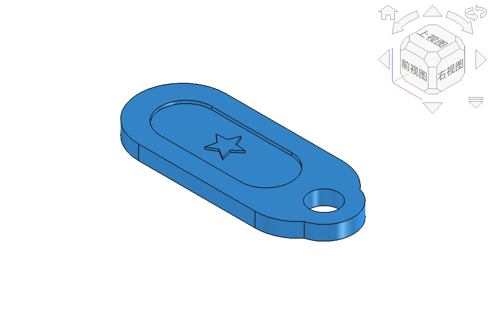
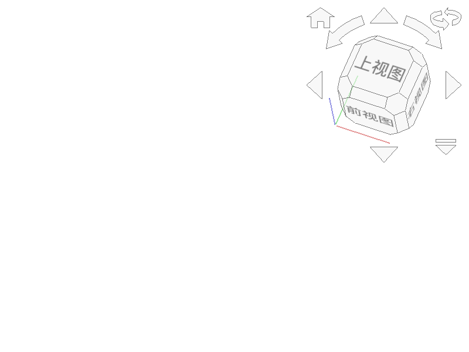

Pad = 把2D草图沿垂直方向拉伸成3D实体。
类比：把一张纸片（2D草图）向上拉起来变成一块砖头（3D实体）。
操作步骤：
1. 选中完全约束的草图
2. 点击PartDesign工作台的"Pad"按钮
3. 设置拉伸长度（如3mm）
4. 确认生成实体
# 用Python创建Pad（核心步骤）
import PartDesign
# 前置条件：doc已创建，sketch将绘制为闭合轮廓
body = doc.addObject("PartDesign::Body", "Body")
sketch = body.newObject("Sketcher::SketchObject", "Sketch")
# 此处用草图工具或addGeometry()绘制闭合轮廓
pad = body.newObject("PartDesign::Pad", "Pad")
pad.Profile = sketch # 指定拉伸的草图
pad.Length = 3.0 # 拉伸长度3mm
pad.Type = 0 # 类型=尺寸
doc.recompute() # 重新计算生成实体
PartDesign::Body：创建特征建模容器，Sketch、Pad等特征必须按顺序放在Body中。body.newObject("Sketcher::SketchObject", "Sketch")：在Body内部创建草图；草图必须是可拉伸的闭合轮廓。body.newObject("PartDesign::Pad", "Pad")：创建拉伸特征，但此时还没有指定截面和高度。pad.Profile = sketch：把草图指定为拉伸截面；pad.Length = 3.0设置拉伸3mm。pad.Type = 0选择“按尺寸”方式，doc.recompute()触发计算并生成实体。doc需先由FreeCAD.newDocument()创建。Pocket = 在实体上挖一个孔或槽（反向的Pad）。
操作步骤：
1. 在实体表面创建新草图（画圆/矩形等孔的形状）
2. 选中草图，点击Pocket按钮
3. 设置挖孔深度
4. 确认生成孔
设计要求（课程方案原文）：
🔹 设计一款个性化的书签/钥匙扣
🔹 必须是完全约束的草图
🔹 包含至少一个圆形或圆弧元素，用于穿绳子
参数：
矩形主体45×20×3mm + 挂环外R7内R3.5 + 2个装饰孔R2

矩形主体+挂环+装饰孔

草图+约束+Pad+Pocket
任务：设计并制作一个个性化钥匙扣
1. 在纸上画出你的设计草图（含尺寸标注）
2. 在FreeCAD中创建草图，添加几何约束和尺寸约束（完全约束）
3. 用Pad拉伸成实体（厚度3mm）
4. 用Pocket挖穿绳孔和装饰孔
5. 保存文件：学号-姓名-钥匙扣.FCStd
6. 导出STL：学号-姓名-钥匙扣.stl
评分标准：完成度40% + 技术性40%（草图全约束）+ 规范性20%（命名规范）